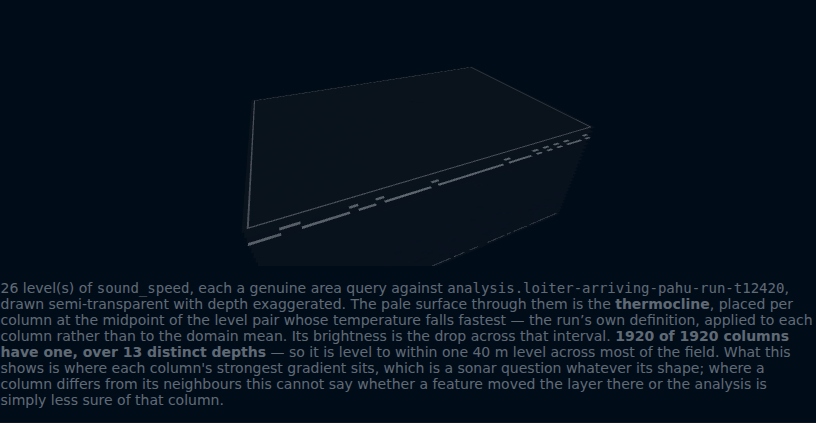

The drawing was honest and the ocean was flat
The background
The thermocline is the depth where the sea's temperature falls away fastest, and sound bends at it. Where it sits is not one number: it domes over cold water and is pressed down under warm, and that shape is what a sonar operator asks about. We drew it as a surface, one depth per column. It came out flat.
The requirement
The drawing had to show shape and, more importantly, say what it found rather than what it was meant to. It printed the count — 7,679 of 7,680 columns at one depth — and blamed the grid rather than the ocean.
The options considered
That sentence was half right, and being specific exposed the other half. The obvious fix was a finer depth axis — six levels over a kilometre cannot see a 30-metre layer. But sampling from 200 metres down to 10 gave one depth every time. The thermocline function took no position: flat by construction, with no shape to resolve.
So the ocean gained one, and it taught us something. Letting the ocean front move the layer tilted the whole domain, and the harness still could not find a drifting eddy it had been missing — the feature-finders read the structure we had just added. Move the layer with the local features only and the eddy is found. A basin-wide tilt fails the same way: shape and feature-finding compete for one signal.
The demo

Open the forecast tab — run the clock forward, pick a column, press "show the volume". The caption counts what it found and names what it cannot tell: the analysis it reads is noisy enough that the count would look the same on a flat ocean. Saying so beats claiming the win — the habit that started this.